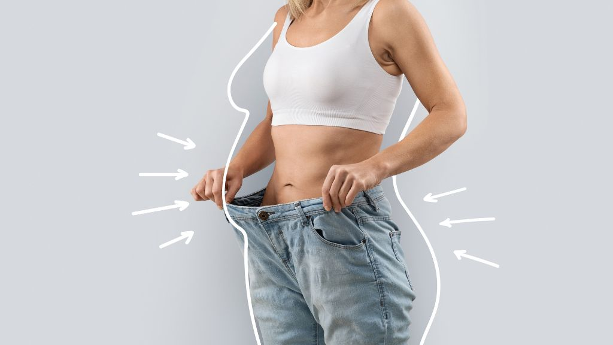
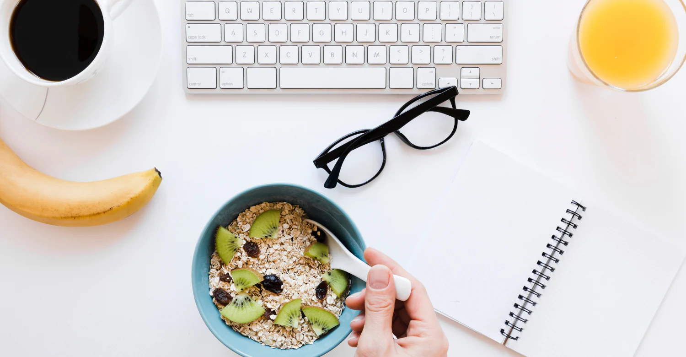
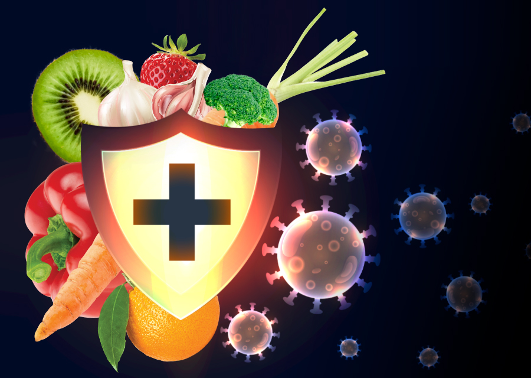

Tu espacio de vida saludable 🌱
Datos Curiosos
1. Pérdida de peso progresiva
Persona con sobrepeso leve que reemplazaba desayunos altos en pan y frituras por batidos verdes.

2. Más energía y vitalidad
Estudiante universitaria con cansancio constante y consumo alto de café.
3. Mejora en la digestión y reducción de hinchazón
Persona con problemas de estreñimiento e inflamación abdominal.

4. Apoyo en la desintoxicación tras vacaciones
Adulto que regresó de un viaje con excesos en comidas y alcohol.

5. Refuerzo inmunológico
Persona que solía resfriarse con frecuencia en invierno.

Video destacado
Mira este video sobre los algunos batidos y sus beneficios: cualquiera de estos lo tenemos listo para ti!!: